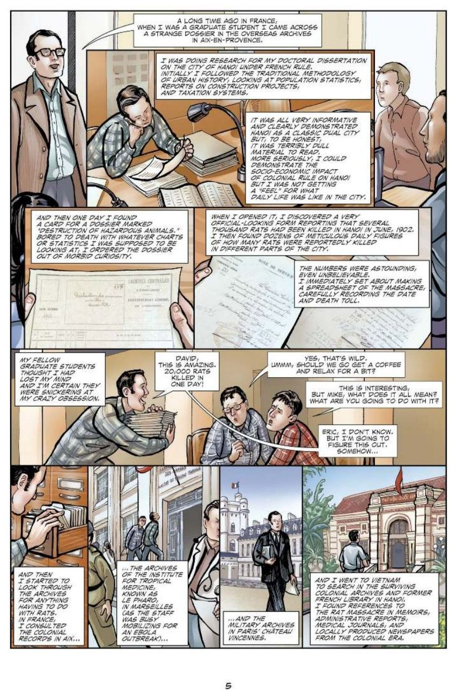

How to finish (about 30 minutes):
In order Work through the 4 parts in order.
Each part In each part, read the pages, answer the quick check, then finish the sentence starter.
Done When all 4 parts are done, press Turn in. Your work saves on this device.

Read each page. Click the page to make it bigger. Open all pages as a PDF ↗
Turn in your work
Your work saves on this device. "Start over" erases it. When you see "Turned in!", you are done.